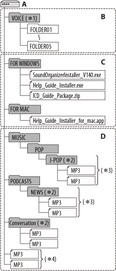
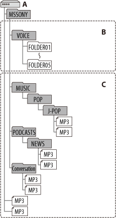
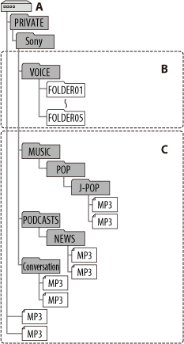

IC RecorderICD-PX333/PX333F
Structure of folders and files
The folders and files are displayed on the computer screen as shown. On a Windows screen using Explorer, and on a Mac screen using Finder, folders and files can be displayed by opening “IC RECORDER” or “MEMORY CARD.”
Built-in memory

A: IC RECORDER folder
B: Folder for files recorded using the IC recorder
C: Folder containing installers for the Sound Organizer software, Help Guide, etc.
D: Folder transferred from your computer
*1 When a file is transferred directly under the VOICE folder, the IC recorder recognizes and handles it as a file transferred from the computer. When you transfer a file from your computer to the IC recorder, put the file in the folders under the VOICE folder.
*2 The name of a folder in which MP3 files are stored will be displayed on the IC recorder as it is, so it is convenient if you put an easy-to-remember name on the folder in advance. Folders shown in the illustration are examples of folder names.
*3 The IC recorder can recognize up to 8 levels of folders transferred to the IC recorder.
*4 If you transfer MP3 files separately, they are classified as being in “No Folder.”
Hint
- The title or artist name, etc., registered in the MP3 files, can be displayed on the IC recorder. It is useful if you input the ID3 tag information using the software you use to make the MP3 files on your computer.
- If no title, or artist name has been registered “No Data” will be displayed in the display window of the IC recorder.
Memory card
When connecting the IC recorder with your computer after the destination memory media has been set to “Memory Card,” the structure of folders is different from that when the destination memory media is set to “Built-In Memory.”
Memory Stick Micro™ (M2™)

A: “MEMORY CARD” folder
B: Folder for files recorded using the IC recorder
C: Folder transferred from your computer
microSD card

A: “MEMORY CARD” folder
B: Folder for files recorded using the IC recorder
C: Folder transferred from your computer